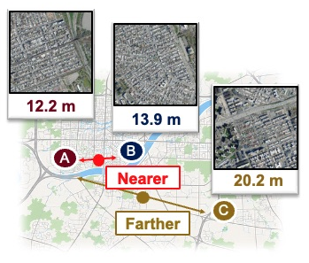
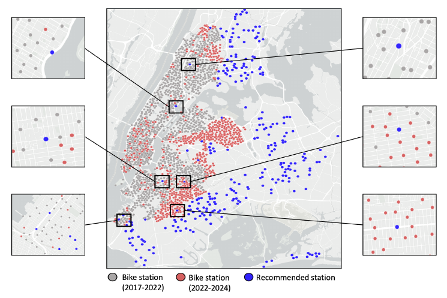

GELATTO: Geospatial relation-aware soft target learning for multimodal region representation
Min Namgung, JangHyeon Lee, Yao-Yi Chiang
ACM SIGSPATIAL · 2026
I am a Ph.D. candidate in Computer Science and Engineering at the University of Minnesota Twin Cities, advised by Yao-Yi Chiang in the Knowledge Computing Lab.
My research focuses on multimodal representation learning and spatial AI, with current interests in learning transferable representations from imagery and text for scene understanding and urban analytics. Previously, I interned at Oak Ridge National Laboratory and received my M.S. and B.S. in Computer Science from Purdue University Fort Wayne.

Min Namgung, JangHyeon Lee, Yao-Yi Chiang

Min Namgung, JangHyeon Lee, Fangyi Ding, Yao-Yi Chiang
Min Namgung, Yijun Lin, Yao-Yi Chiang
Program committee & reviewing